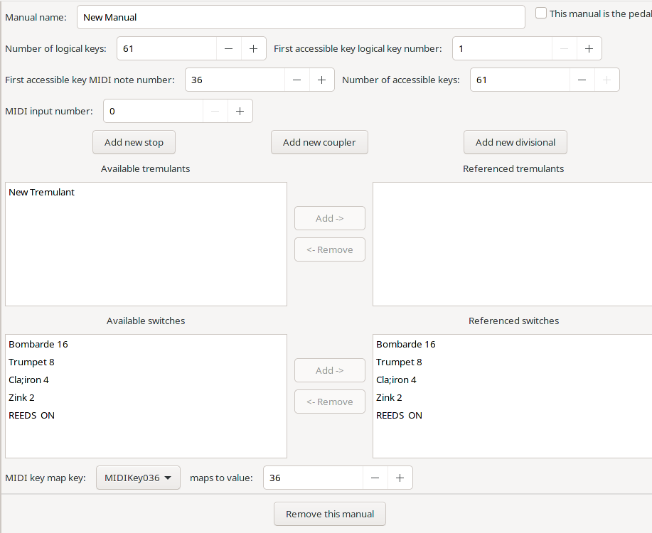

Manuals (including the pedals) are created for each division of the organ. For floating divisions, a manual is created, but its GUI element is not. In GOODF stops,couplers, and divisional objects are created in the manual object as subsidiary objects, and they appear under the manual in the object tree at the left of the GOODF window, and once created, are edited independent of their manual. In addition to couplers, independently created Tremulant and Switch objects can be referenced in the manual editing window. The purpose of referencing them here is so that divisional objects of this manual can control them.
The manual editing window looks like this:

Manual Name is the name by which the manual is known, such as Great, Hauptwerk, Positive, Swell, Choir, etc. It must be entered here since its value can not be changed in its GUI element.
Number Of Logical Keys (integer 1-192, required) Number of keys on this manual (including non-playable ones). None playable keys are accessed with sub and super intramanual couplers
First Accessible Key LogicalKeyNumber (integer 1 - NumberOfLogicalKeys, required) number of the first usable key
First Accessible Key MIDI NoteNumber (integer 0 - 127, required) MIDI note number of the first MIDI accessible key.
Number Of Accessible Keys (integer 0 - 85, required) number of MIDI accessible keys.
Midi Input Number (integer 0 - 200, default: 0) This number is used while building the initial MIDI configuration to map the manual object to what MIDI device the the user has set for the respective pedal/manual. 0 means no association. 1 maps to pedal, 2 to first manual, 3 to second manual etc. NOTE: the GUI only allows the association of the first few manuals. Second touch manuals can be set to the same number as the main manual as the user then only has to configure the low velocity to make it work.
MIDI key map key: This allows a key on the manual to be mapped to a different Midi note number than its default. Use the pulldown to select the key, then use maps to value to select the new midi note to which it responds. You can repeat using the pulldown for as many keys as you wish to remap